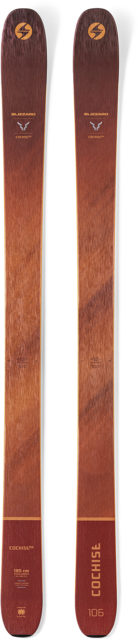
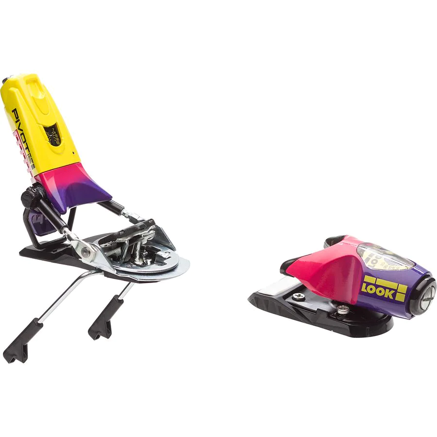
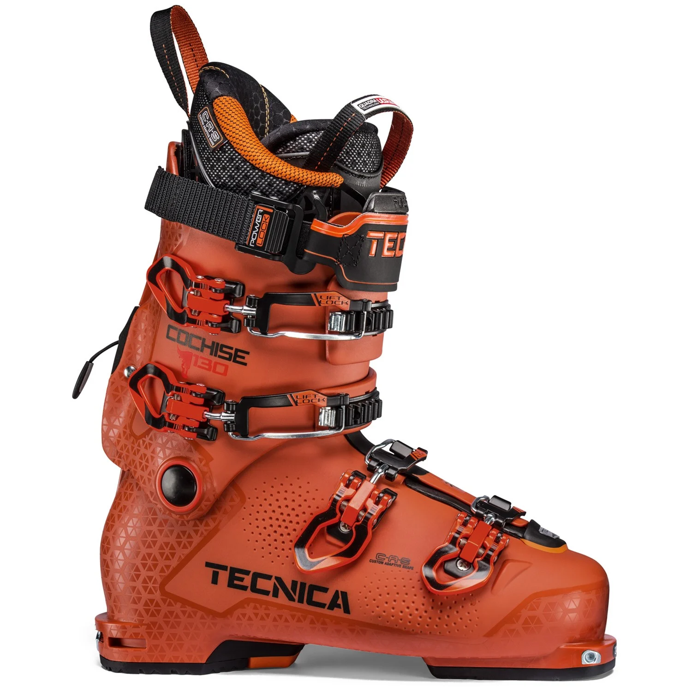

What You Need
My Skis: Blizzard Cochise 106
If I could sum it up in three words, I would say: these skis RIP. With almost full metal construction and an aggresive flex pattern, these things will throw you backseat if you're not careful. It takes a lot of effort to wrangle these bad boys but once you do, they come alive and you can charge any line you decide to stare down. They are truly meant for all-out unbridled ripping. Manageable in tight spots, they will keep you planted when you let 'em run. Here's a good review to get a visual.
My Bindings: Look Pivot 15
Every pair of skis that charge as hard as the Cochises needs a pair of bindings that will keep you locked in whether you're flying in pow or off a cliff, but will save your knees when one of those two things go south. The ultimate solution to that problem are the Look Pivot 15s, probably the most reliable bindings on the market today. They keep me locked in when I need 'em to, and release when I screw up. Here's a vid that explains their wonderfulness:
My Boots: Tecnica Cochise 130
Maybe I'm biased, but if the ski Cochise is good, then its boot equivalent has gotta be as well, right? I love the flex of these boots- they keep your foot locked in while also being comfy and warm. A go-to for anybody that wants to rip like the Cochise skis demand you to.
May the good times roll in the mountains. I'm also of the belief that if you're going to know your ski gear, you've got to understand the reality that we are on thin ice as far as the climate goes, pun intended. The melting glaciers around the world are just an indication that our ski seasons may be shortening. I think this visualization rather speaks for itself- there is hope, but it starts with awareness. May our powder days continue!